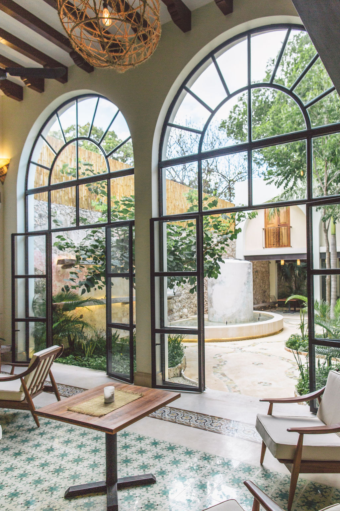
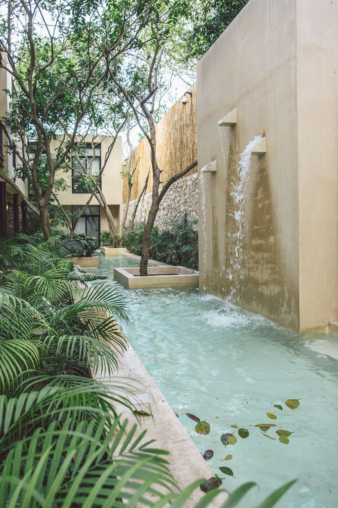
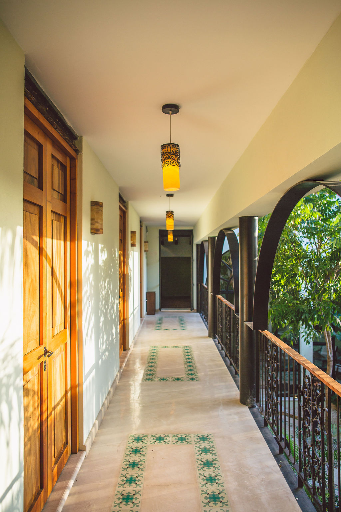
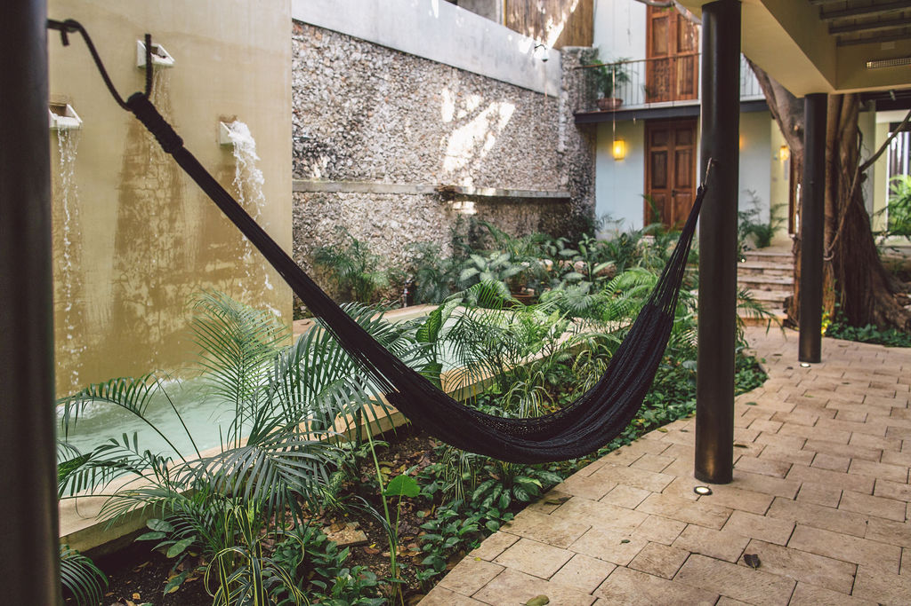
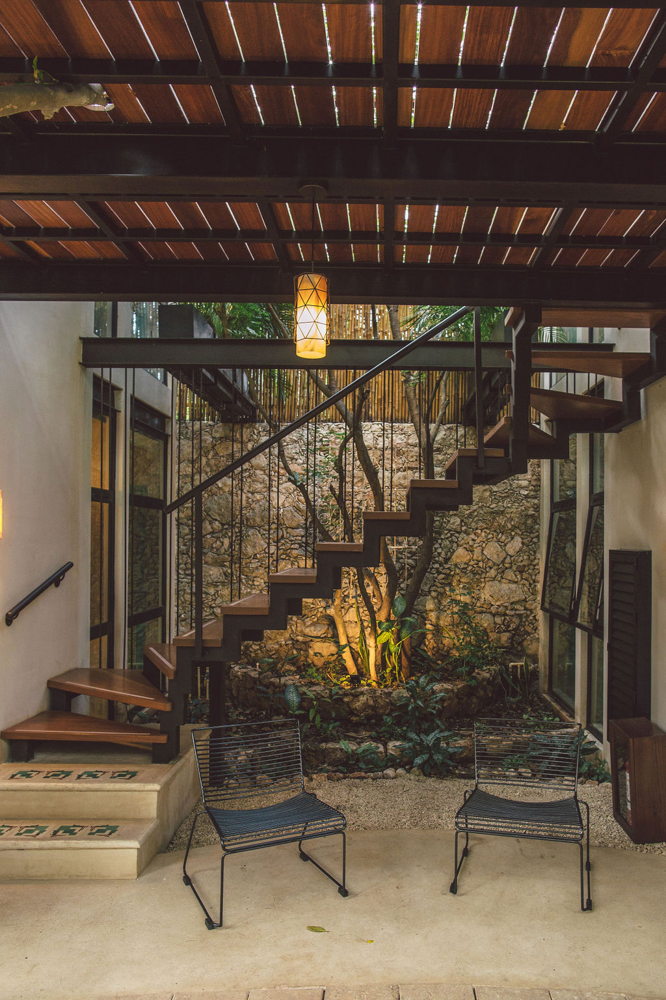
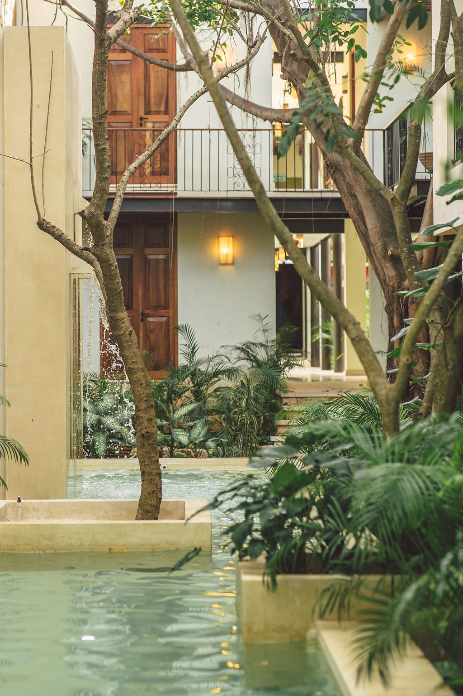

Una casa en el barrio de Santa Ana. A restored colonial casona wrapped in foliage — three courtyards of vine, fan-palm, and frangipani that cool the rooms before the air conditioning ever has to. Fifteen quiet rooms. Coffee at six. The exhibition is everywhere you stand.






02 / ESPECIFICACIONES — THE HOUSE AS DATA
Specifications — the house as data
ROOMS: FIFTEEN // 15 KEYS
BUILT: c. 1907 // RESTORED 2019
COURTYARDS: III // PATIO + JARDÍN + AZOTEA
CANOPY: ~640 M² FOLIAGE COVERAGE
SPECIES: 42 // CATALOGUED FLORA
GARDENER: ONE // L. CETINA, SINCE 2019, BY HAND
NEIGHBORS: PARQUE · 40 M / IGLESIA · 90 M / MERCADO · 60 M
MICHELIN KEY: 2025 FIRST · CIUDAD DE MÉRIDA
EXHIBITION: ACTIVE TREEHOUSE × SOHO GALLERIES · VOL. III
03 / LA COLECCIÓN — ROOMS AS CATALOG
The Collection — Rooms as catalog
№ I
KING GARDEN ROOM
> CATALOG ENTRY 01 / 04 · 28 M² / 301 SQ FT
Plate I — King Garden Room, ground floor, opens onto the south patio.
"A small, adults-only house in Santa Ana wrapped in its own microclimate of foliage. Fifteen keys, three courtyards, and a contemporary art program that lives in the rooms rather than in a separate gallery — the property runs as one continuous, considered gesture."
— MICHELIN INSPECTORS' NOTE, MÉRIDA / 2025
— EDITOR'S NOTE / SANTA ANA, FEB. 2025
The inspector arrived on a Tuesday in the off-season. We did not know it was an inspection. They asked for the gardener by name and sat in the library for forty minutes reading the herbarium. They took the room rate sheet, made one note, and left. The Key was announced six weeks later. We changed nothing.
Fifteen quiet rooms, three courtyards, and a small red sun over the front desk.
What the Key means
The Michelin Key is to hotels what the star is to restaurants. One Key recognises a property as "a very special stay" — judged on a sense of place, craft of design and service, personality, and value. Tree House holds the only one in Mérida.
CURATED BYTREEHOUSE × SOHO GALLERIES (MÉRIDA)— ON VIEW THROUGHOUT THE HOUSE, ROTATES QUARTERLY
NAMESAKETree House is the founding venue of the Treehouse program. The "Treehouse" in Treehouse × SoHo Galleries is, literally, this house. The collaboration began in March 2024 over coffee on the azotea with SoHo's director, J. Casares; the first work — a Maza textile — was hung in the stairwell six weeks later. The program has rotated through here every quarter since.
— CURATORIAL STATEMENT
What does a private interior owe the foliage it lives inside?
The question has been pinned to the herbarium wall, in pencil, since the program began. El dosel verde gathers seven Yucatecan and Latin-American artists whose practice circles it from seven different mediums: ceramic-fiber, hand-dyed cotton, oil on Belgian linen, photogravure, brass tuning forks, ink and gouache. The building answers in canopy. Forty-two species overhead, three courtyards underfoot, fifteen rooms that the gallery has agreed to call its rooms for the duration of the show.
Plates are installed where the canopy puts them — beneath the ceiba, against the stairwell, on the azotea after dark, at the foot of bed № 7 in Suite II. They rotate at the close of every fourth lunar month, so the foliage outside and the work inside are never in the same configuration twice. The catalog is hand-bound in Santa Ana and ships at checkout.
— S. RAMÍREZ & J. CASARES, CO-CURATORSSANTA ANA, MÉRIDA · ABR. 2026
Forty-two species under the canopy. Each one labelled in situ on a small brass tag bearing the number you see here, maintained quietly by L. Cetina, gardener, by hand, since 2019. The plates marked PL. 06 ↗ are these same species painted in ink and gouache by Paloma Cetina — his sister — and hang in the library upstairs (see Exhibition / Plate 06). The catalog and the garden are the same list, drawn twice.
001
PL. 06 ↗
Ceiba
Ceiba pentandra
Ceiba · Kapok · Ya'axche'
f.malvaceae · JARDÍN, CENTRAL · ~85 YR
Sacred tree of the Maya. Property anchor.
007
PL. 06 ↗
Plumeria
Plumeria rubra
Frangipani · Nikté
f.apocynaceae · PATIO SUR — TWO · BLOOM MAY–SEP
Scent intensifies at dusk.
011
Chamaedorea
Chamaedorea seifrizii
Bamboo Palm · Xiat
f.arecaceae · STAIRWELL · ~14 CLUMPS
Filters light before it reaches Suite № II.
014
PL. 06 ↗
Bougainvillea
Bougainvillea glabra
Bugambilia
f.nyctaginaceae · WEST WALL — TRAINED · YEAR-ROUND BLOOM
Not native. Everyone forgives it.
018
PL. 06 ↗
Monstera
Monstera deliciosa
Piñanona
f.araceae · LIBRARY · 3 LARGE SPECIMENS
Fenestrations widen with age.
022
PL. 06 ↗
Agave
Agave angustifolia
Henequén · Kiij
f.asparagaceae · ENTRANCE — ROW OF 5
Nod to the state's monoculture past.
027
Brugmansia
Brugmansia suaveolens
Floripondio · Angel's Trumpet
f.solanaceae · PATIO NORTE — ONE · BLOOMS AT NIGHT
Toxic. Kept out of reach by design.
033
Tillandsia
Tillandsia usneoides
Spanish Moss · Barba de Viejo
f.bromeliaceae · CEIBA — DRAPED · EPIPHYTE
Reads as grey at noon, green at dusk.
042
Citrus
Citrus × aurantium
Naranjo Agrio · Bitter Orange
f.rutaceae · AZOTEA — ONE POT
Provides the marmalade.
PARTIAL INDEX9 of 42 specimens shown. The remaining thirty-three are on the brass tags and in the library, painted. Ask at the front desk; the gardener walks the grounds at 0900 on Tuesdays and Fridays.
07 / DIARIO DE CAMPO — FIELD DISPATCHES
Field Dispatches — The Journal
— THE JOURNAL
The staff and the artists in residence keep field notes. Some are useful (the cenotes that empty out on a Tuesday). Some are seasonal (six weeks of frangipani). All are hand-edited and frequently late.
ENTRY 01MAY 2026
Hidden cenotes of Yucatán: a partial map
Five cenotes east of Mérida, ranked not by depth or temperature but by emptiness on a Tuesday at 10 a.m. Maps drawn by hand. Photocopies at the front desk.
— BY THE CONCIERGE TEAM
ENTRY 02APR 2026
A morning at the Mercado Santa Ana
Forty meters from the front door. What to ask for, who to ask, what to never ask for in October. Includes the cochinita stand we have used for breakfast since 2019.
— BY E. CANCHÉ, BREAKFAST CHEF
ENTRY 03MAR 2026
Frangipani, six weeks.
The frangipani opens for six weeks and the courtyards smell like nothing else for the rest of the year. Notes on which suite catches the bloom at which hour.
— BY L. CETINA, GARDENER
ENTRY 04FEB 2026
A reader's centro: three bookshops, two record shops, one Thursday bar.
Three small bookshops, two record shops, one bar that opens only on Thursdays. A reader's route through the centro, drawn by an artist in residence.
— BY A. QUIÑONES, ARTIST IN RESIDENCE
08 / MÉRIDA CURADA — EXPERIENCES, BY ALLOCATION
Curated Mérida — Experiences, by allocation
— CURATED MÉRIDA
Four programs, booked through the concierge. The drivers and operators are ones the house has used personally — most of them for longer than the house has been open. Long stays preferred; canopy first, city after. Itineraries on paper only if asked.
01
CENOTES & HACIENDAS
DURATIONFULL DAY / ~9 HRPARTY2–4 ADULTSRADIUS~80 KM SE OF MÉRIDAINCLUDESDRIVER, LUNCH, GUIDE
Three cenotes selected for water clarity and emptiness — typically the Cuzamá ring — followed by a long lunch at a restored henequén hacienda. Swim, eat, return under the canopy by sunset.
DESDE $480 USD / PARTY
02
LONG-STAY ALLOCATION
NIGHTS5 OR MOREDISCOUNT−30% ON ROOMINCLUDESBREAKFAST · GARDEN TOURUPGRADEON AVAILABILITY
Stay five nights or more and the rate drops by thirty percent across all room categories. Includes a slow breakfast in the jardín and a guided walk through the forty-two-species arboretum with our gardener.
−30% / NO ADDITIONAL FEE
03
IN-SUITE WELLNESS
DURATION60 / 90 / 120 MINVENUEYOUR SUITE OR THE AZOTEAPRACTITIONERS2, LOCALNOTICE4 HR MIN.
Mayan-influenced bodywork delivered to your suite or, by request, to the rooftop garden at dusk. Copal optional. Silent format on request.
DESDE $240 USD / SESSION
04
PRIVATE TRANSFER · MID
ROUTEMID ↔ HOTELVEHICLESUV / SEDANTRAVEL TIME~18 MINWAITINGINCLUDED 30 MIN
Private airport transfer (Manuel Crescencio Rejón / MID) in a fully insured vehicle with an English-speaking driver. Complimentary water; cold towel on arrival in the lobby.
SUMMER QUIET — MMXXVI−20% / JUN 01 – AUG 31, 2026. APPLICABLE TO ALL ROOM CATEGORIES.
09 / NOTAS DE CAMPO — FIELD NOTES
Field Notes — Guest reviews
FIELD NOTES / ARCHIVE — TRANSCRIBED FROM GUEST LEDGER, SANTA ANA, 2024–2026
№ 041 · 12 MAR 2026
"Walked through the front door and the temperature dropped six degrees before anyone offered us a glass of water. The canopy is real. The Michelin Key is earned."
— M.H. / SAN FRANCISCO, CA STAY: 04 NIGHTS / SUITE № III
№ 047 · 28 APR 2026
"The art is not decoration. There is a Pech piece under the ceiba I could not look away from at breakfast for three consecutive mornings. The catalog ships with checkout. We kept it."
— L. & R. / LISBOA, PT STAY: 06 NIGHTS / PENTHOUSE CANOPY
№ 033 · 18 DEC 2025
"The gardener walked us through every plant by its Latin name. By the third specimen I had stopped pretending to remember and started simply listening. Worth the trip on its own."
— A.K. / LONDON, UK STAY: 05 NIGHTS / SUITE № II
№ 029 · 21 NOV 2025
"Booked it for a honeymoon. Spent the first afternoon doing nothing in the courtyard, the second doing nothing on the azotea. By night three I had stopped checking my phone. The reservation they made us on the last night was at a place we wouldn't have found ourselves — I'd rather not say where."